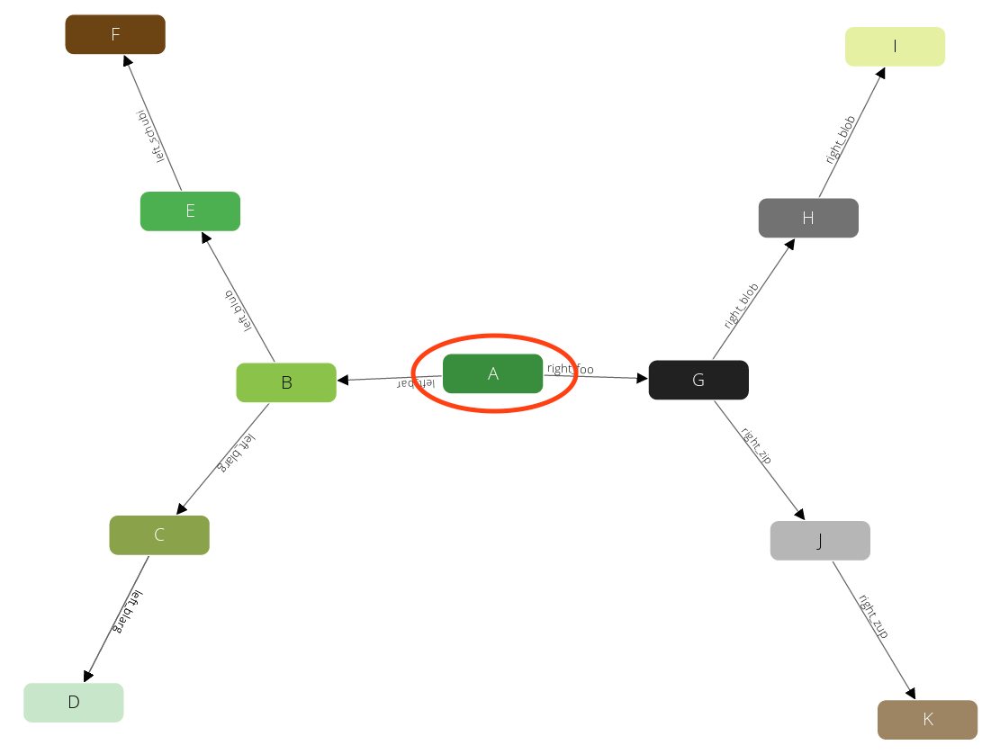
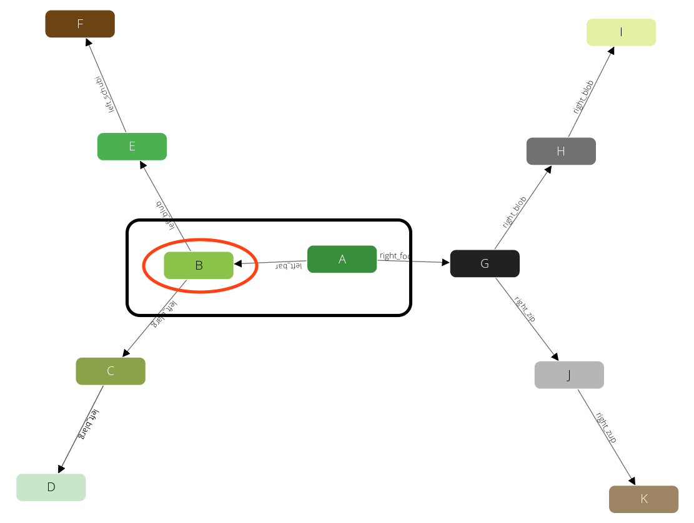
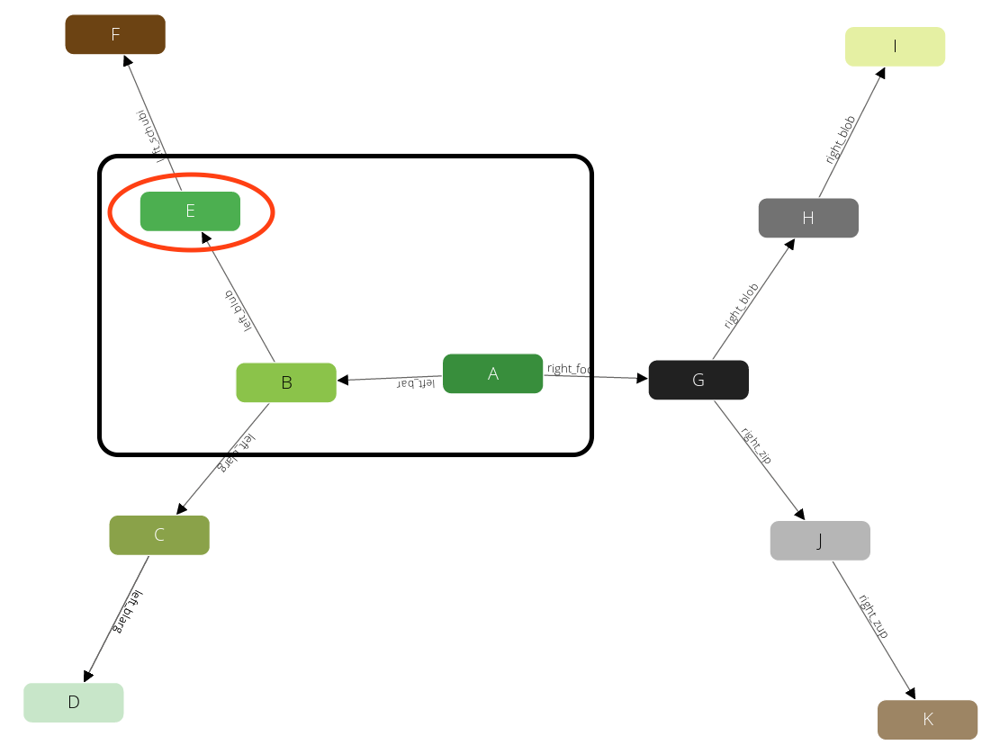
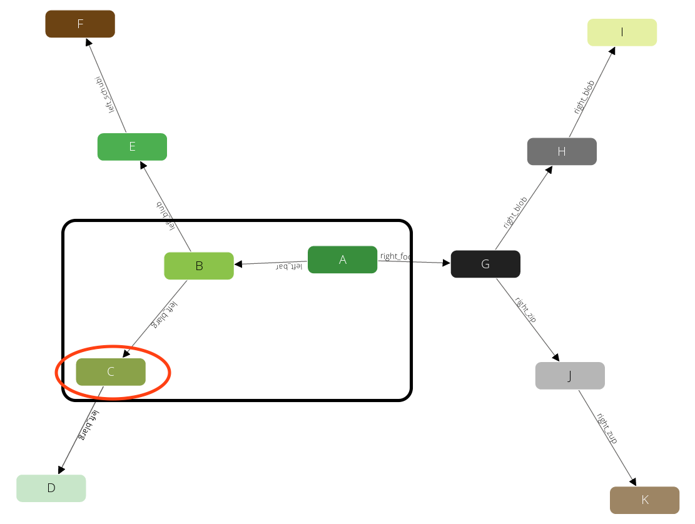
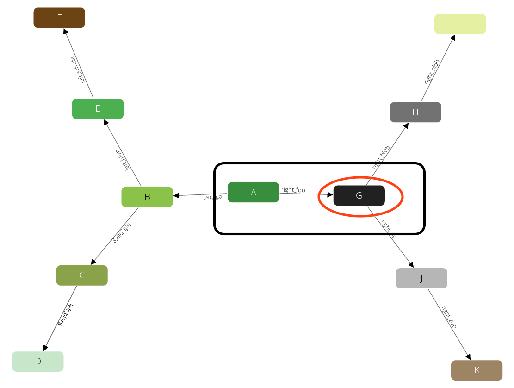
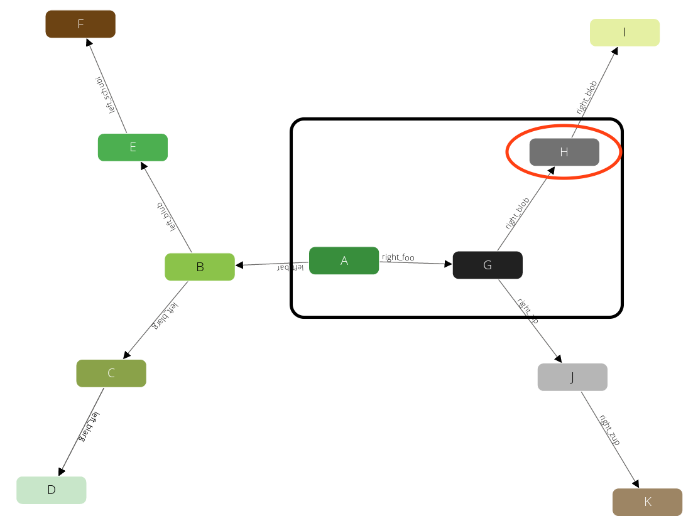
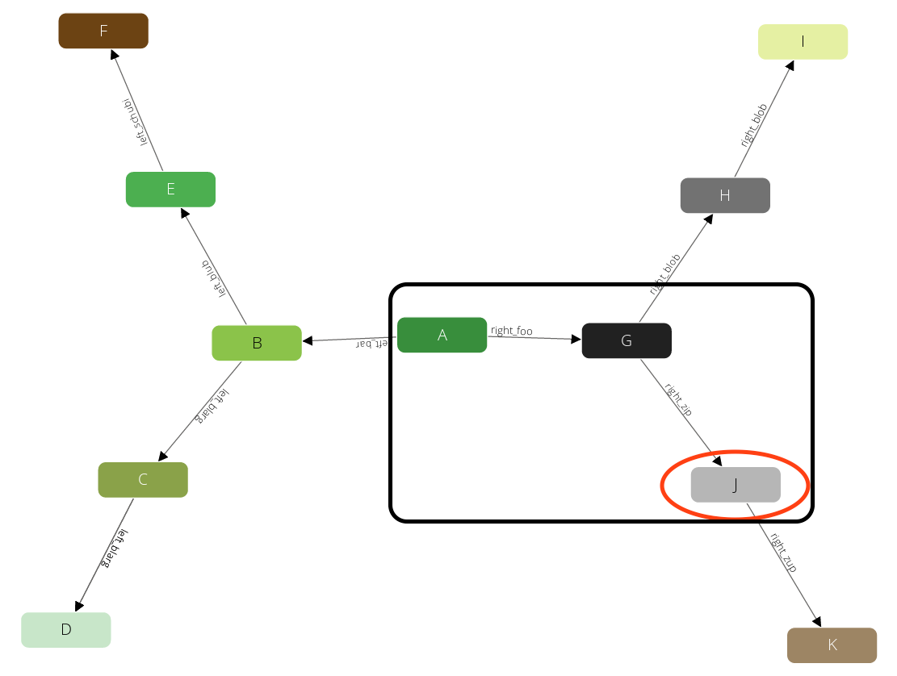
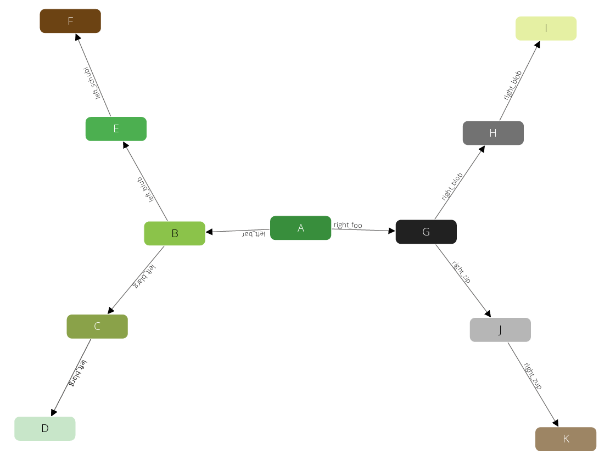

OUTBOUND|INBOUND|ANY: follow outgoing, incoming, or edges pointing in either
direction in the traversal; Please note that this can't be replaced by a bind parameter.
A traversal starts at one specific document (startVertex) and follows all edges connected to this document. For all documents (vertices) that are targeted by these edges it will again follow all edges connected to them and so on. It is possible to define how many of these follow iterations should be executed at least (min depth) and at most (max depth).
For all vertices that were visited during this process in the range between min depth and max depth iterations you will get a result in form of a set with three items:
Let's take a look at a simple example to explain how it works. This is the graph that we are going to traverse:
We use the following parameters for our query:

Now it walks to one of the direct neighbors of A, say B (note: ordering is not guaranteed!):

The query will remember the state (red circle) and will emit the first result A → B (black box). This will also prevent the traverser to be trapped in cycles. Now again it will visit one of the direct neighbors of B, say E:

We have limited the query with a max depth of 2, so it will not pick any neighbor of E, as the path from A to E already requires 2 steps. Instead, we will go back one level to B and continue with any other direct neighbor there:

Again after we produced this result we will step back to B. But there is no neighbor of B left that we have not yet visited. Hence we go another step back to A and continue with any other neighbor there.

And identical to the iterations before we will visit H:

And J:

After these steps there is no further result left. So all together this query has returned the following paths:
Now let's see how we can write a query that follows this schema. You have two options here, you can either use a named graph or a set of edge collections (anonymous graph).
FOR vertex[, edge[, path]]
IN [min[..max]]
OUTBOUND|INBOUND|ANY startVertex
GRAPH graphName
[OPTIONS options]
FOR: emits up to three variables:
vertices: an array of all vertices on this pathedges: an array of all edges on this pathIN min..max: the minimal and maximal depth for the traversal:
OUTBOUND|INBOUND|ANY: follow outgoing, incoming, or edges pointing in either
direction in the traversal; Please note that this can't be replaced by a bind parameter.
_id. All other values will lead to a warning and an empty
result. If the specified document does not exist, the result is empty as well
and there is no warning.
GRAPH graphName (string): the name identifying the named graph.
Its vertex and edge collections will be looked up.
OPTIONS options (object, optional): used to modify the execution of the
traversal. Only the following attributes have an effect, all others are ignored:
min depth > 1 a vertex that was found before
min depth
might not be returned at all (it still might be part of a path). Note:
Using this configuration the result is not deterministic any more. If there
are multiple paths from startVertex to vertex, one of those is picked.
min depth > 1, an edge that was found before
min depth
might not be returned at all (it still might be part of a path). Note:
Using this configuration the result is not deterministic any more. If there
are multiple paths from startVertex over edge one of those is picked.
FOR vertex[, edge[, path]]
IN [min[..max]]
OUTBOUND|INBOUND|ANY startVertex
edgeCollection1, ..., edgeCollectionN
[OPTIONS options]
Instead of GRAPH graphName you may specify a list of edge collections. Vertex
collections are determined by the edges in the edge collections. The rest of the
behavior is similar to the named version.
If the same edge collection is specified multiple times, it will behave as if it
were specified only once. Specifying the same edge collection is only allowed when
the collections do not have conflicting traversal directions.
For traversals with a list of edge collections you can optionally specify the direction for some of the edge collections. Say for example you have three edge collections edges1, edges2 and edges3, where in edges2 the direction has no relevance but in edges1 and edges3 the direction should be taken into account. In this case you can use OUTBOUND as general traversal direction and ANY specifically for edges2 as follows:
FOR vertex IN OUTBOUND
startVertex
edges1, ANY edges2, edges3
All collections in the list that do not specify their own direction will use the
direction defined after IN. This allows to use a different direction for each
collection in your traversal.
All three variables emitted by the traversals might as well be used in filter statements. For some of these filter statements the optimizer can detect that it is possible to prune paths of traversals earlier, hence filtered results will not be emitted to the variables in the first place. This may significantly improve the performance of your query. Whenever a filter is not fulfilled, the complete set of vertex, edge and path will be skipped. All paths with a length greater than max will never be computed.
In the current state, AND combined filters can be optimized, but OR
combined filters cannot.
Filtering on paths allows for the most powerful filtering and may have the highest impact on performance. Using the path variable you can filter on specific iteration depths. You can filter for absolute positions in the path by specifying a positive number (which then qualifies for the optimizations), or relative positions to the end of the path by specifying a negative number.
FOR v, e, p IN 1..5 OUTBOUND 'circles/A' GRAPH 'traversalGraph'
FILTER p.edges[0].theTruth == true
RETURN p
will filter all paths where the start edge (index 0) has the attribute theTruth equal to true. The resulting paths will be up to 5 items long.
Similar to filtering the edges on the path you can also filter the vertices:
FOR v, e, p IN 1..5 OUTBOUND 'circles/A' GRAPH 'traversalGraph'
FILTER p.vertices[1]._key == "G"
RETURN p
And of course you can combine these filters in any way you like:
FOR v, e, p IN 1..5 OUTBOUND 'circles/A' GRAPH 'traversalGraph'
FILTER p.edges[0].theTruth == true
AND p.edges[1].theFalse == false
FILTER p.vertices[1]._key == "G"
RETURN p
The query will filter all paths where the first edge has the attribute theTruth equal to true, the first vertex is "G" and the second edge has the attribute theFalse equal to false. The resulting paths will be up to 5 items long.
Note: Although we have defined a min of 1, we will only get results of depth 2. This is because for all results in depth 1 the second edge does not exist and hence cannot fulfill the condition here.
With the help of array comparison operators filters can also be defined on the entire path, like ALL edges should have theTruth == true:
FOR v, e, p IN 1..5 OUTBOUND 'circles/A' GRAPH 'traversalGraph'
FILTER p.edges[*].theTruth ALL == true
RETURN p
Or NONE of the edges should have theTruth == true:
FOR v, e, p IN 1..5 OUTBOUND 'circles/A' GRAPH 'traversalGraph'
FILTER p.edges[*].theTruth NONE == true
RETURN p
Both examples above are recognized by the optimizer and can potentially use other indexes than the edge index.
It is also possible to define that at least one edge on the path has to fulfill the condition:
FOR v, e, p IN 1..5 OUTBOUND 'circles/A' GRAPH 'traversalGraph'
FILTER p.edges[*].theTruth ANY == true
RETURN p
It is guaranteed that at least one, but potentially more edges fulfill the condition. All of the above filters can be defined on vertices in the exact same way.
Filtering on the path influences the Iteration on your graph. If certain conditions aren't met, the traversal may stop continuing along this path.
In contrast filters on vertex or edge only express whether you're interestet in the actual value of these
documents. Thus, it influences the list of returned documents (if you return v or e) similar
as specifying a non-null min value. If you specify a min value of 2, the traversal over the first
two nodes of these paths has to be executed - you just won't see them in your result array.
Similar are filters on vertices or edges - the traverser has to walk along these nodes, since you may be interested in documents further down the path.
We will create a simple symmetric traversal demonstration graph:

arangosh> var examples = require("@arangodb/graph-examples/example-graph.js");
arangosh> var graph = examples.loadGraph("traversalGraph");
arangosh> db.circles.toArray();
[
{
"_key" : "I",
"_id" : "circles/I",
"_rev" : "_XAuyfzC--C",
"label" : "9"
},
{
"_key" : "G",
"_id" : "circles/G",
"_rev" : "_XAuyfzC--A",
"label" : "7"
},
{
"_key" : "F",
"_id" : "circles/F",
"_rev" : "_XAuyfzC--_",
"label" : "6"
},
{
"_key" : "A",
"_id" : "circles/A",
"_rev" : "_XAuyfz----",
"label" : "1"
},
{
"_key" : "E",
"_id" : "circles/E",
"_rev" : "_XAuyfzC---",
"label" : "5"
},
{
"_key" : "C",
"_id" : "circles/C",
"_rev" : "_XAuyfz---A",
"label" : "3"
},
{
"_key" : "D",
"_id" : "circles/D",
"_rev" : "_XAuyfz---B",
"label" : "4"
},
{
"_key" : "J",
"_id" : "circles/J",
"_rev" : "_XAuyfzC--D",
"label" : "10"
},
{
"_key" : "B",
"_id" : "circles/B",
"_rev" : "_XAuyfz---_",
"label" : "2"
},
{
"_key" : "H",
"_id" : "circles/H",
"_rev" : "_XAuyfzC--B",
"label" : "8"
},
{
"_key" : "K",
"_id" : "circles/K",
"_rev" : "_XAuyfzC--E",
"label" : "11"
}
]
arangosh> db.edges.toArray();
[
{
"_key" : "7561",
"_id" : "edges/7561",
"_from" : "circles/A",
"_to" : "circles/B",
"_rev" : "_XAuyfzC--F",
"theFalse" : false,
"theTruth" : true,
"label" : "left_bar"
},
{
"_key" : "7586",
"_id" : "edges/7586",
"_from" : "circles/G",
"_to" : "circles/J",
"_rev" : "_XAuyfzK---",
"theFalse" : false,
"theTruth" : true,
"label" : "right_zip"
},
{
"_key" : "7568",
"_id" : "edges/7568",
"_from" : "circles/C",
"_to" : "circles/D",
"_rev" : "_XAuyfzG--_",
"theFalse" : false,
"theTruth" : true,
"label" : "left_blorg"
},
{
"_key" : "7577",
"_id" : "edges/7577",
"_from" : "circles/A",
"_to" : "circles/G",
"_rev" : "_XAuyfzG--C",
"theFalse" : false,
"theTruth" : true,
"label" : "right_foo"
},
{
"_key" : "7589",
"_id" : "edges/7589",
"_from" : "circles/J",
"_to" : "circles/K",
"_rev" : "_XAuyfzK--_",
"theFalse" : false,
"theTruth" : true,
"label" : "right_zup"
},
{
"_key" : "7565",
"_id" : "edges/7565",
"_from" : "circles/B",
"_to" : "circles/C",
"_rev" : "_XAuyfzG---",
"theFalse" : false,
"theTruth" : true,
"label" : "left_blarg"
},
{
"_key" : "7583",
"_id" : "edges/7583",
"_from" : "circles/H",
"_to" : "circles/I",
"_rev" : "_XAuyfzG--E",
"theFalse" : false,
"theTruth" : true,
"label" : "right_blub"
},
{
"_key" : "7571",
"_id" : "edges/7571",
"_from" : "circles/B",
"_to" : "circles/E",
"_rev" : "_XAuyfzG--A",
"theFalse" : false,
"theTruth" : true,
"label" : "left_blub"
},
{
"_key" : "7580",
"_id" : "edges/7580",
"_from" : "circles/G",
"_to" : "circles/H",
"_rev" : "_XAuyfzG--D",
"theFalse" : false,
"theTruth" : true,
"label" : "right_blob"
},
{
"_key" : "7574",
"_id" : "edges/7574",
"_from" : "circles/E",
"_to" : "circles/F",
"_rev" : "_XAuyfzG--B",
"theFalse" : false,
"theTruth" : true,
"label" : "left_schubi"
}
]
arangosh> var examples = require("@arangodb/graph-examples/example-graph.js");
arangosh> var graph = examples.loadGraph("traversalGraph");
arangosh> db.circles.toArray();
arangosh> db.edges.toArray();
To get started we select the full graph. For better overview we only return the vertex IDs:
arangosh> db._query("FOR v IN 1..3 OUTBOUND 'circles/A' GRAPH 'traversalGraph' RETURN v._key");
[
"B",
"C",
"D",
"E",
"F",
"G",
"H",
"I",
"J",
"K"
]
[object ArangoQueryCursor, count: 10, hasMore: false]
arangosh> db._query("FOR v IN 1..3 OUTBOUND 'circles/A' edges RETURN v._key");
[
"B",
"C",
"D",
"E",
"F",
"G",
"H",
"I",
"J",
"K"
]
[object ArangoQueryCursor, count: 10, hasMore: false]
arangosh> db._query("FOR v IN 1..3 OUTBOUND 'circles/A' GRAPH 'traversalGraph' RETURN v._key");
arangosh> db._query("FOR v IN 1..3 OUTBOUND 'circles/A' edges RETURN v._key");
We can nicely see that it is heading for the first outer vertex, then goes back to the branch to descend into the next tree. After that it returns to our start node, to descend again. As we can see both queries return the same result, the first one uses the named graph, the second uses the edge collections directly.
Now we only want the elements of a specific depth (min = max = 2), the ones that are right behind the fork:
arangosh> db._query("FOR v IN 2..2 OUTBOUND 'circles/A' GRAPH 'traversalGraph' return v._key");
[
"C",
"E",
"H",
"J"
]
[object ArangoQueryCursor, count: 4, hasMore: false]
arangosh> db._query("FOR v IN 2 OUTBOUND 'circles/A' GRAPH 'traversalGraph' return v._key");
[
"C",
"E",
"H",
"J"
]
[object ArangoQueryCursor, count: 4, hasMore: false]
arangosh> db._query("FOR v IN 2..2 OUTBOUND 'circles/A' GRAPH 'traversalGraph' return v._key");
arangosh> db._query("FOR v IN 2 OUTBOUND 'circles/A' GRAPH 'traversalGraph' return v._key");
As you can see, we can express this in two ways: with or without max parameter in the expression.
Now let's start to add some filters. We want to cut of the branch on the right side of the graph, we may filter in two ways:
_key == Glabel attribute of the edge connecting A to G is
right_fooarangosh> db._query("FOR v, e, p IN 1..3 OUTBOUND 'circles/A' GRAPH 'traversalGraph' FILTER p.vertices[1]._key != 'G' RETURN v._key");
[
"B",
"C",
"D",
"E",
"F"
]
[object ArangoQueryCursor, count: 5, hasMore: false]
arangosh> db._query("FOR v, e, p IN 1..3 OUTBOUND 'circles/A' GRAPH 'traversalGraph' FILTER p.edges[0].label != 'right_foo' RETURN v._key");
[
"B",
"C",
"D",
"E",
"F"
]
[object ArangoQueryCursor, count: 5, hasMore: false]
arangosh> db._query("FOR v, e, p IN 1..3 OUTBOUND 'circles/A' GRAPH 'traversalGraph' FILTER p.vertices[1]._key != 'G' RETURN v._key");
arangosh> db._query("FOR v, e, p IN 1..3 OUTBOUND 'circles/A' GRAPH 'traversalGraph' FILTER p.edges[0].label != 'right_foo' RETURN v._key");
As we can see all vertices behind G are skipped in both queries.
The first filters on the vertex _key, the second on an edge label.
Note again, as soon as a filter is not fulfilled for any of the three elements
v, e or p, the complete set of these will be excluded from the result.
We also may combine several filters, for instance to filter out the right branch (G), and the E branch:
arangosh> db._query("FOR v,e,p IN 1..3 OUTBOUND 'circles/A' GRAPH 'traversalGraph' FILTER p.vertices[1]._key != 'G' FILTER p.edges[1].label != 'left_blub' return v._key");
[
"B",
"C",
"D"
]
[object ArangoQueryCursor, count: 3, hasMore: false]
arangosh> db._query("FOR v,e,p IN 1..3 OUTBOUND 'circles/A' GRAPH 'traversalGraph' FILTER p.vertices[1]._key != 'G' AND p.edges[1].label != 'left_blub' return v._key");
[
"B",
"C",
"D"
]
[object ArangoQueryCursor, count: 3, hasMore: false]
arangosh> db._query("FOR v,e,p IN 1..3 OUTBOUND 'circles/A' GRAPH 'traversalGraph' FILTER p.vertices[1]._key != 'G' FILTER p.edges[1].label != 'left_blub' return v._key");
arangosh> db._query("FOR v,e,p IN 1..3 OUTBOUND 'circles/A' GRAPH 'traversalGraph' FILTER p.vertices[1]._key != 'G' AND p.edges[1].label != 'left_blub' return v._key");
As you can see, combining two FILTER statements with an AND has the same result.
All our previous examples traversed the graph in OUTBOUND edge direction.
You may however want to also traverse in reverse direction (INBOUND) or
both (ANY). Since circles/A only has outbound edges, we start our queries
from circles/E:
arangosh> db._query("FOR v IN 1..3 OUTBOUND 'circles/E' GRAPH 'traversalGraph' return v._key");
[
"F"
]
[object ArangoQueryCursor, count: 1, hasMore: false]
arangosh> db._query("FOR v IN 1..3 INBOUND 'circles/E' GRAPH 'traversalGraph' return v._key");
[
"B",
"A"
]
[object ArangoQueryCursor, count: 2, hasMore: false]
arangosh> db._query("FOR v IN 1..3 ANY 'circles/E' GRAPH 'traversalGraph' return v._key");
[
"F",
"B",
"C",
"D",
"A",
"G"
]
[object ArangoQueryCursor, count: 6, hasMore: false]
arangosh> db._query("FOR v IN 1..3 OUTBOUND 'circles/E' GRAPH 'traversalGraph' return v._key");
arangosh> db._query("FOR v IN 1..3 INBOUND 'circles/E' GRAPH 'traversalGraph' return v._key");
arangosh> db._query("FOR v IN 1..3 ANY 'circles/E' GRAPH 'traversalGraph' return v._key");
The first traversal will only walk in the forward (OUTBOUND) direction. Therefore from E we only can see F. Walking in reverse direction (INBOUND), we see the path to A: B → A.
Walking in forward and reverse direction (ANY) we can see a more diverse result. First of all, we see the simple paths to F and A. However, these vertices have edges in other directions and they will be traversed.
Note: The traverser may use identical edges multiple times. For instance, if it walks from E to F, it will continue to walk from F to E using the same edge once again. Due to this we will see duplicate nodes in the result.
Please note that the direction can't be passed in by a bind parameter.
Now let's have a look what the optimizer does behind the curtain and inspect traversal queries using the explainer:
arangosh> db._explain("FOR v,e,p IN 1..3 OUTBOUND 'circles/A' GRAPH 'traversalGraph' LET localScopeVar = RAND() > 0.5 FILTER p.edges[0].theTruth != localScopeVar RETURN v._key", {}, {colors: false});
Query string:
FOR v,e,p IN 1..3 OUTBOUND 'circles/A' GRAPH 'traversalGraph' LET localScopeVar = RAND() > 0.5
FILTER p.edges[0].theTruth != localScopeVar RETURN v._key
Execution plan:
Id NodeType Est. Comment
1 SingletonNode 1 * ROOT
2 TraversalNode 1 - FOR v /* vertex */, p /* paths */ IN 1..3 /* min..maxPathDepth */ OUTBOUND 'circles/A' /* startnode */ GRAPH 'traversalGraph'
3 CalculationNode 1 - LET localScopeVar = (RAND() > 0.5) /* simple expression */
4 CalculationNode 1 - LET #6 = (p.`edges`[0].`theTruth` != localScopeVar) /* simple expression */
5 FilterNode 1 - FILTER #6
6 CalculationNode 1 - LET #8 = v.`_key` /* attribute expression */
7 ReturnNode 1 - RETURN #8
Indexes used:
By Type Collection Unique Sparse Selectivity Fields Ranges
2 edge edges false false 85.00 % [ `_from`, `_to` ] base OUTBOUND
Traversals on graphs:
Id Depth Vertex collections Edge collections Options Filter conditions
2 1..3 circles edges uniqueVertices: none, uniqueEdges: path
Optimization rules applied:
Id RuleName
1 move-calculations-up
2 optimize-traversals
3 move-calculations-down
arangosh> db._explain("FOR v,e,p IN 1..3 OUTBOUND 'circles/A' GRAPH 'traversalGraph' FILTER p.edges[0].label == 'right_foo' RETURN v._key", {}, {colors: false});
Query string:
FOR v,e,p IN 1..3 OUTBOUND 'circles/A' GRAPH 'traversalGraph' FILTER p.edges[0].label == 'right_foo'
RETURN v._key
Execution plan:
Id NodeType Est. Comment
1 SingletonNode 1 * ROOT
2 TraversalNode 1 - FOR v /* vertex */, p /* paths */ IN 1..3 /* min..maxPathDepth */ OUTBOUND 'circles/A' /* startnode */ GRAPH 'traversalGraph'
3 CalculationNode 1 - LET #5 = (p.`edges`[0].`label` == "right_foo") /* simple expression */
4 FilterNode 1 - FILTER #5
5 CalculationNode 1 - LET #7 = v.`_key` /* attribute expression */
6 ReturnNode 1 - RETURN #7
Indexes used:
By Type Collection Unique Sparse Selectivity Fields Ranges
2 edge edges false false 85.00 % [ `_from`, `_to` ] base OUTBOUND
2 edge edges false false 85.00 % [ `_from`, `_to` ] level 0 OUTBOUND
Traversals on graphs:
Id Depth Vertex collections Edge collections Options Filter conditions
2 1..3 circles edges uniqueVertices: none, uniqueEdges: path (#3.`label` == "right_foo")
Optimization rules applied:
Id RuleName
1 move-calculations-up
2 move-filters-up
3 move-calculations-up-2
4 move-filters-up-2
5 optimize-traversals
arangosh> db._explain("FOR v,e,p IN 1..3 OUTBOUND 'circles/A' GRAPH 'traversalGraph' LET localScopeVar = RAND() > 0.5 FILTER p.edges[0].theTruth != localScopeVar RETURN v._key", {}, {colors: false});
arangosh> db._explain("FOR v,e,p IN 1..3 OUTBOUND 'circles/A' GRAPH 'traversalGraph' FILTER p.edges[0].label == 'right_foo' RETURN v._key", {}, {colors: false});
We now see two queries: In one we add a variable localScopeVar, which is outside the scope of the traversal itself - it is not known inside of the traverser. Therefore, this filter can only be executed after the traversal, which may be undesired in large graphs. The second query on the other hand only operates on the path, and therefore this condition can be used during the execution of the traversal. Paths that are filtered out by this condition won't be processed at all.
And finally clean it up again:
arangosh> var examples = require("@arangodb/graph-examples/example-graph.js");
arangosh> examples.dropGraph("traversalGraph");
true
If this traversal is not powerful enough for your needs, like you cannot describe your conditions as AQL filter statements, then you might want to have a look at manually crafted traversers.
Also see how to combine graph traversals.